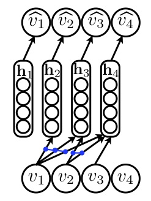
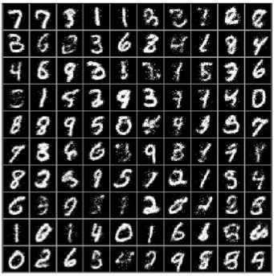

Neural autoregressive models

Density modeling, i.e. the problem of learning the
distribution that generated some available data, is one of
the most general and fundamental problem in machine
learning. One simple approach to tackle this problem is to
define some directed graph over the input observations
and then learn the conditional distribution of each observation
given its parents in the graph.
In
The Neural
Autoregressive Distribution Estimator
(NADE),
Iain
Murray and I proposed a neural network specifically
tailored to this task of density or distribution
modeling. Compared to many baselines, NADE was able to
reach state of the art performances on several different
datasets. Published at
the
AISTATS 2011
conference, the paper received a Notable Paper Award.
Once NADE is trained, we can also easily generate samples from
its learned distribution. When trained on small images of handwritten
digit characters (with binary pixels), NADE can reproduce images
that resemble such handwritten characters:

I'm now interested in how this simple yet powerful approach can be further
developed to model more complex data with arbitrary structure.
References
- The Neural Autoregressive Distribution Estimator [pdf] [talk] [code]
Hugo Larochelle and Iain Murray,
Artificial Intelligence and Statistics, 2011
Notable Paper Award